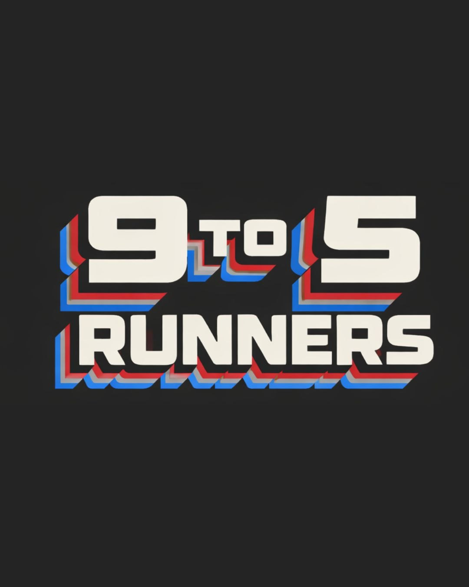
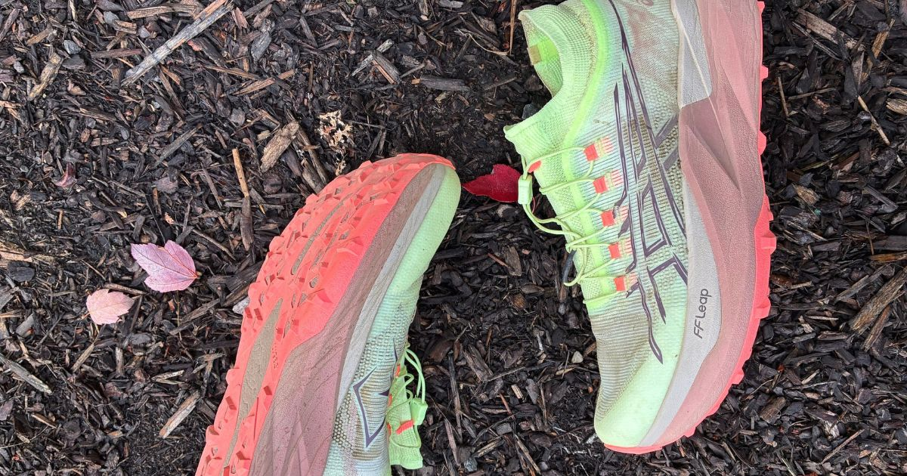
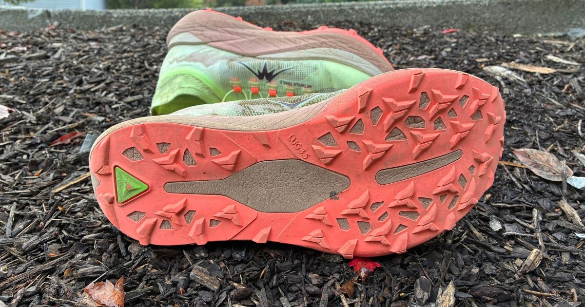
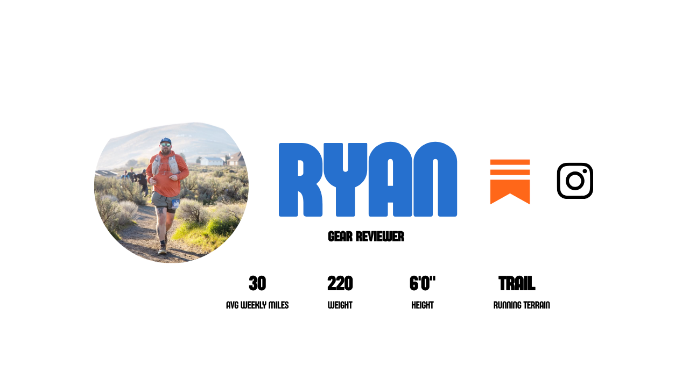

Buy If
- You want a great 10k-20-mile racer
- You have a narrower foot
- You prefer a firmer ride, with light responsiveness

Ryan takes ASICS’ trail racer across 70 miles of varied terrain, including a 55K ultra.
Back to ShoesThe ASICS METAFUJI Trail 2 has been a widely anticipated shoe after watching Tom Evans and Ben Dhiman go 1st and 2nd place at UTMB in 2025 wearing a prototype of the shoe. We then saw Ben Dhiman win UTMB in the shoe in 2026. The hype has been real. While ASICS has been on a tear with their road line, the hype hasn’t always been there with the trail models… is that about to change? Ryan took the METAFUJI Trail 2 across a variety of terrain, and even wore them for a 55k, for a total of 70 miles.

Alright, let’s get into some of the aspects of the METAFUJI Trail 2 that I really enjoyed. The first is the upper. ASICS uses what they call a Motion Wrap TR material. At first, I was worried because feeling it from the outside of the shoe, it seems really tough, but on the inside, it gave me no irritation. It has a really nice blend of structure but give. My foot was able to find its mold and sit nicely in the shoe, hugged gently by this very durable upper. It also has a nice overlay system up near the toes for rock protection. Of course, the shoe also boasts the very trendy built-in gaiter/bootie, this one being a little shorter than others like the Tecton or Cascadia Elite. The fabric is soft and truly kept all debris out of my shoe. I’m a real big fan of this upper.
The lockdown, especially in the heel, is superb. I had zero issues getting a really nice and secure fit. Thank you, ASICS, for using a proper soft heel in this shoe! I’m so over all the minimal heel padding in many racers these days. ASICS was able to still manage a very lightweight construction but give you enough padding to prevent rubbing. I had zero heel rubbing on my 34-mile run. I also think the implementation of the quick laces in this setup is done SO well. I’m not normally a quick-lace guy, but the way ASICS handled these, I’m now a fan. Extremely easy to pull the laces tight and get a good lockdown, while the fit stays in place the entire run. I like the little lace cap garage they give you, too, a nice touch and easy to use.
While I will admit I didn’t take these out for any crazy technical runs, I am impressed with the ASICSGRIP rubber. The 3.5mm lugs grip onto anything you need them to, and they did well on a few muddy sections. Most of my runs were on gravel trails, with light singletrack, and I had zero issues. I wouldn’t take these on anything technical because of the stability, not because of the grip.
Lastly, you get a lot of premium materials in this trail racer for a very low weight. I love how this shoe feels on foot. It feels like a perfect blend of protective, agile, and lightweight. I look at this shoe on the shelf and truly wonder how they manage to keep it so light.

Over 70 miles, I feel like I really got to know and understand this shoe. There were aspects I kept an eye on, seeing if they would evolve or change over the course of my time spent running in the shoe. With that, one of those things I wanted to see was the midsole. ASICS, as they describe it, uses both FF LEAP (light, soft, energetic) and FF BLAST+ (soft and bouncy). I have to say this midsole is WAY firmer than I expected. I thought that over time it would maybe break in and soften up, but that hasn’t been the case 70 miles in. I’ve run in some shoes with a carbon plate (the METAFUJI has a full-length X-shaped carbon fiber plate) where the firmness is compensated with a lot of bounce and energy. Now, something I’ve noticed is that I think this shoe shines at shorter distances. I set my personal best 10-miler time wearing this shoe. However, over the course of long ultra-distance miles, it felt firm and a bit dead to me. This leads me to believe that this shoe does really well when you’re pushing the pace and running fast (for me, this works at shorter distances). When I wore this for a 55k ultra, I just craved something softer over those long miles. This is where I think this shoe is more of a 10k-20-mile shoe in my personal opinion and experience. How did Ben Dhiman and Tom Evans run 100 miles in this shoe? I can only assume they had custom variations of the shoe, not the true production pair. I would be shocked if they did.
I think the biggest complaint in the 1st iteration of the METAFUJI was the stability and lack of it. Does the 2 fix this? Kind of. It’s certainly better. I do think it still forces one to pronate more because of the geometry of the midsole and the high stack height. The carbon fiber plate helps with stability, of course, but it’s still something I wouldn’t be comfortable in on any technical terrain.
The last item I want to touch on, which I think is an important one for the ultra runners out there, is indeed the fit. Now, I had multiple different experiences in this shoe, and I’m glad I did. I did a 13-mile run where I had a great experience. Fit was perfect, literally zero issues. I then did a 24-mile run, zero fit issues, and did not notice the midsole firmness late in the run. And then I ran a 34-mile ultra in the shoe where the wheels fell off. My foot seemed to swell up around 18-20 miles in, and I could feel pressure on my inner midfoot and outer midfoot to where it was hard to run because of the pain. At this point, I just wanted a wider toe box and midfoot because everything felt cramped. This was my experience with the fit of the shoe, so just something to keep in mind if you’re looking at this shoe for long days on the trail.
I am torn. I think this is a good shoe, I really do. It’s got some work, though. I really like how ASICS built upon this second iteration and made some adjustments to the fit, the midsole geometry, and the midsole compound to soften it up. They will have a winner on their hands. Like I said, I had some great runs in this shoe, but at the ultra distance, I was ready to take it off my foot halfway through the race.
I suck at being definitive, so I’m going to go against my comfort zone and say that this shoe isn’t worth $280. I think that’s insanely expensive, and unfortunately, it’s the going market rate for a trail racer these days with all the bells and whistles. This shoe isn’t better than the HOKA Tecton X 4, the Norda 055, the Mount to Coast M1, or other competing trail racers. It’s a great attempt, and I’m even more excited for what we see comes with the METAFUJI Trail 3.
This review contains an affiliate link. If you purchase through our Running Warehouse link, we may earn a small commission at no additional cost to you. This helps support 9 to 5 Runners and allows us to keep producing independent reviews.
Shop the ASICS METAFUJI Trail 2 at Running WarehouseASICS METAFUJI Trail 2 was provided for review. We were not paid for this review, and all opinions are our own.
